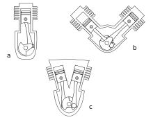
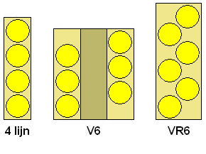

1 Description
2 Volkswagen engines
2.1 12-valve versions
2.2 24-valve versions
2.3 History
3 Applications
3.1 W engines
4 Other manufacturers
5 References
Description
The name VR6 comes from the German initials for a V engine (German: V-Motor) and a straight (inline) engine (German: Reihenmotor), therefore the VR engine is described as a "Vee-Inline engine" (VR-Motor).
VR6 engines share a common cylinder head for the two banks of cylinders. Only two camshafts are needed for the engine, regardless of whether the engine has two or four valves per cylinder. This simplifies engine construction and reduces costs.
Since the cylinders are not located on the centreline of the combined cylinder head, the lengths of the intake and exhaust ports are different for each bank. Without compensation, these varying port lengths would result in the two banks of cylinders producing different amounts of power at a particular engine RPM. The difference in port lengths are compensated for with the length of the runners in the intake manifold, the camshaft overlap and lift profile, or a combination thereof.

Volkswagen engines
The Volkswagen VR6 engine was designed for transverse engine installations in front-wheel drive vehicles.[1] The narrow angle of 15° between the two cylinder banks reduced the width of the engine, compared to a traditional V6 engine. Therefore the VR6 engine is easier to fit within an engine bay that was originally designed for a four-cylinder engine.
12-valve versions
Frontal views of a straight engine (diagram "a"), V engine (diagram "b") and VR engine (diagram "c")
24-valve versions
A version with four valves per cylinder (for a total of 24 valves) was introduced in 1999.[6] The 24-valve versions use one camshaft for the intake valves of both banks (using rockers to reach the furthest bank) and the other camshaft for the exhaust valves of both banks (again, through the use of rockers).[7] This operating principle is more akin to a double overhead camshaft (DOHC) design, with one camshaft for intake valves, and one for exhaust valves.
A version with four valves per cylinder (for a total of 24 valves) was introduced in 1999.[6] The 24-valve versions use one camshaft for the intake valves of both banks (using rockers to reach the furthest bank) and the other camshaft for the exhaust valves of both banks (again, through the use of rockers).[7] This operating principle is more akin to a double overhead camshaft (DOHC) design, with one camshaft for intake valves, and one for exhaust valves.
History
The 1922-1976 Lancia V4 engine was the first narrow angle V engine to be used in a motor vehicle.[8][9] The first versions of the VR6 engine were introduced in the 1991 Volkswagen Passat B3 sedan and Volkswagen Corrado coupe.[10] A 2.8 L (171 cu in) AAA version producing 128 kW (172 hp) was used in most Passat models and in the North American version of the Corrado. A 2.9 L (177 cu in) ABV version producing 140 kW (188 hp) was used in the Passat Syncro model and the European version of the Corrado. Both versions used 2 valves per cylinder. Usage of the VR6 engine spread to the Volkswagen Golf Mk3 2.8 VR6 and Volkswagen Vento/Jetta (A3) 2.8 VR6 models in 1992. The 2.8 litre version was also used in the 1996-2003 Mercedes-Benz Vito (W638) commercial vans, where it was designated as 'M104.900'. In 1997, the VR5 engine was introduced, based on the VR6 engine. An AQP/AUE version with 4 valves per cylinder was introduced in 2000. This 2.8 L (171 cu in) engine produced 150 kW (201 hp), and mostly replaced the 2 valve engines, except for in North America where an updated version of the 2 valve engine was used in the Golf and Jetta from 2000-2002. A 3.2 L (195 cu in) EA390 version of the 4 valve engine was introduced in the 2001 Volkswagen New Beetle RSi model. This 3.2 litre engine was also used in the 2002-2004 Volkswagen Golf Mk4 R32 model and the 2003-2010 Audi TT 3.2 VR6 quattro models. Peak power output was 177 kW (237 hp) in the New Beetle and Golf (engine code BFH/BML), and 184 kW (247 hp) in the Audi TT (engine code BHE). The engine size was again increased in 2005, when a 3.6 L (220 cu in) version with gasoline direct injection (FSI) was introduced in the Volkswagen Passat (B6). This BLV version uses a narrower 10.6 degree angle between the cylinder banks and produces 206 kW (276 hp). A 3.2 L (195 cu in) AXZ version producing 184 kW (247 hp) was introduced in 2006.[11] In 2008, an uprated BWS version of the 3.6 litre engine producing 220 kW (295 hp) was introduced in the Volkswagen Passat (B6) R36 model.[12] The base model Porsche Cayenne (9PA) used 3.2-liter VR6 engine from 2003-2006 and then a 3.6-litre VR6 engine from 2008-2010. Then the next generation Porsche Cayenne (92A) also used a 3.6-litre VR6 engine from 2010-2018. Volkswagen had started to phase out VR engines in favour of downsized turbocharged engines, however the VR6 currently remains in production for the Volkswagen Passat (NMS) sedan models sold in China. In 2017, the VR6 engines made an unexpected comeback, with versions of the 24-valve VR6 engines being produced for the Volkswagen Atlas. Volkswagen also made brand new VR6 (still EA390) for chinese market only, it’s 2,5Litre Turbocharged 24v VR6 220 kW (295 hp) and 500nm of torque for Volkswagen Teramont SUV and new Volkswagen Talagon MPV
Applications
Volkswagen Group automobiles:
- 1991-1995 Volkswagen Corrado
- 1991-2015 Volkswagen Passat B3
- 1992-1998 Volkswagen Golf Mk3